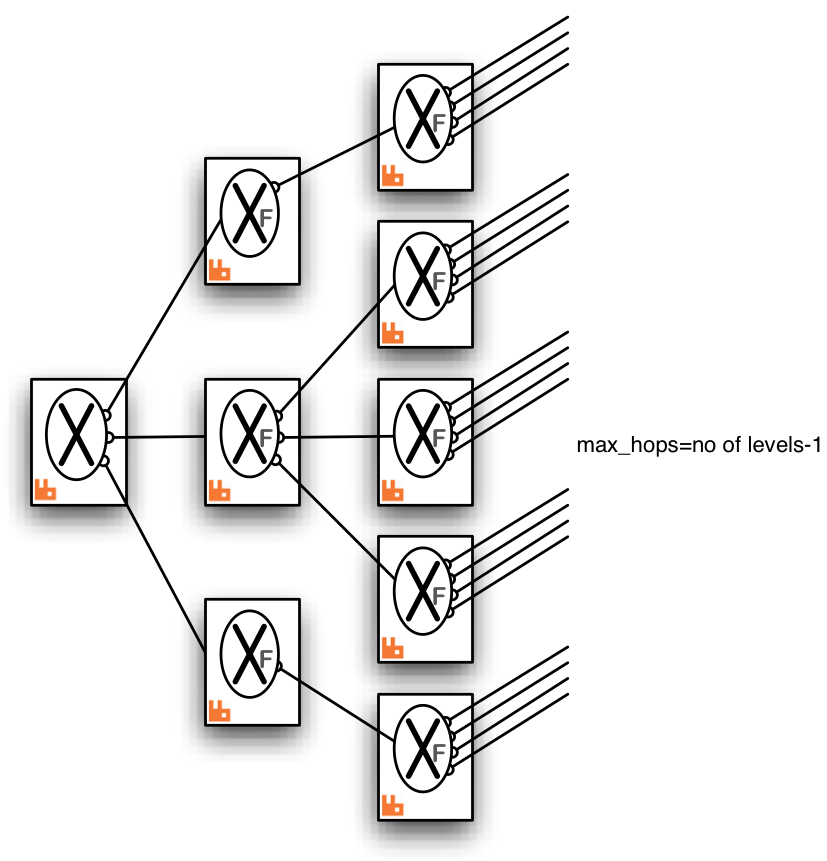

Old Federation Plugin
This page documents the rabbitmq_old_federation plugin. This plugin is intended for backward compatibility only. New installations should use the new federation plugin, as it is more flexible and easier to use. Support for the rabbitmq_old_federation plugin will be removed in a future release.
Differences Between Old and New Federation
Federation works the same in both versions of the plugin; the only differences are in how it is configured. A summary is:
| Old | New |
|---|---|
| Configuration lives in the configuration file. | Configuration is stored in the broker database, manipulated with rabbitmqctl or the management plugin. |
| You must ensure all nodes in a cluster have the same configuration. | All nodes in a cluster automatically have the same configuration. |
| The broker must be restarted for changes to take effect. | Changes to federation take effect immediately. |
| Federated exchanges are of a special type, and must be declared as such by AMQP clients. | Federated exchanges are transparent to clients; exchanges can become federated at any time. |
Enabling the old_federation plugin
If you have a federation setup from a previous version of RabbitMQ and wish to continue using it with the old federation plugin, you will need to take account of the fact that the plugin has been renamed. Therefore you need to disable the new federation plugin, enable the old one, and edit your configuration.
rabbitmq-plugins disable rabbitmq_federation rabbitmq-plugins enable rabbitmq_old_federation
Then edit your configuration file and change
{rabbitmq_federation, configuration goes here}
to
{rabbitmq_old_federation, configuration goes here}
Running both plugins
During migration you can run both plugins at once. However, you should not tell the new federation plugin to federate an exchange of type x-federation.
Legacy documentation
For reference the old plugin is documented below. Please note that this does not refer to the plugin by its current name of rabbitmq_old_federation.
What does it do?
The federation plugin defines a new exchange type x-federation. An exchange instance of this type is called a federated exchange.
- What does a federated exchange do?
-
A federated exchange links to other exchanges (called upstream exchanges). Logically (see next item), messages published to the upstream exchanges are copied to the federated exchange, as though they were published directly to it. The upstream exchanges do not need to be reconfigured and they do not have to be on the same broker or in the same cluster.
Here is a diagram showing a single federated exchange in one broker linking to a set of two upstream exchanges in other brokers.

All of the configuration needed to establish the upstream links and the federated exchange is in the broker with the federated exchange.
- Are all messages copied?
-
Actually, only those messages that need to be copied are propagated. This is an optimisation arranged dynamically by the federation plugin. (See below.)
- How does a federated exchange link to its upstream exchanges?
-
The federated exchange will connect to all its upstream exchanges using AMQP. When declaring or configuring the federated exchange each upstream exchange is listed with the connection properties to be used to establish the link.
- How does the federated exchange route the messages it receives?
-
Rather than being a complete exchange type of its own (with its own routing strategy) the federated exchange type is a modified version of another type of exchange. The type which is modified is called the backing-type. The backing-type is specified when the federated exchange is declared.
Messages can be published to a federated exchange like any other. Messages copied from upstream exchanges and locally published messages are routed just as the backing-type exchange would route them.
Although not strictly correct, we often say the backing-type is the type of the federated exchange.
Normally the backing-type is topic. This is the type of exchange the federation plugin was designed for. By using federated exchanges a topic space can be extended across a number of independently managed RabbitMQ servers.
- Can I federate a federated exchange?
-
There is nothing to prevent a federated exchange being 'upstream' from another federated exchange. One can even form 'loops', for example, exchange A declares exchange B to be upstream from it, and exchange B declares exchange A to be upstream from it. More complex multiply-connected arrangements are allowed.
To prevent messages being continually copied and re-routed (in a never-ending cycle) there is a limit placed on the number of times a message can be copied over a link (see max_hops below). It is recommended that all the exchanges linked by federation are of the same type (i.e. backing-type). Mixing types will lead to strange routing behaviour.
The backing-type cannot be x-federation.
- What are typical uses for federated exchanges?
-
One typical use would be to have the same "logical" exchange distributed over many brokers. Each broker would declare a federated exchange with all the other federated exchanges upstream. (The links would form a complete bi-directional graph on n exchanges.)
Another use would be to implement massive fanout - a single "root" exchange in one broker (which need not be federated) can be declared as upstream by many other federated exchanges in other brokers. In turn, each of these can be upstream for many more exchanges, and so on.
See the example diagrams below for some possible arrangements.
Implementation
Inter-broker communication is implemented using AMQP (optionally secured with SSL). Bindings are grouped together and bind / unbind commands are sent to the upstream exchange. Therefore the federated exchange only receives messages for which it has a subscription. The bindings are sent upstream asynchronously - so the effect of adding or removing a binding is only guaranteed to be seen eventually.
The messages are buffered in a queue created in the upstream exchange's broker. This is called the upstream queue. It is the upstream queue which is bound to the upstream exchange with the grouped bindings. It is possible to tailor some of the properties of this queue in the connection configuration.
Here is a detailed diagram showing a single federated exchange linking to a single upstream exchange including the upstream queue and bindings created by the federation plugin shown in grey. The fat arrow on the upstream link indicates messages republished by the federated exchange. Some potential publisher clients are shown publishing to both exchanges.
Publications to either exchange may be received by queues bound to the federated exchange, but publications directly to the federated exchange cannot be received by queues bound to the upstream exchange.
Getting Started
The federation plugin is included in the RabbitMQ distribution. To enable it, use rabbitmq-plugins:
rabbitmq-plugins enable rabbitmq_federation
When using a federated exchange in a cluster, all the nodes of the cluster must have the federation plugin installed. Any node can declare a federated exchange and its properties are shared in the cluster as usual. If a node fails, links to upstream exchanges will be recreated on a surviving node.
Configuration
Federated exchanges may be statically declared in the federation plugin configuration, requiring no further exchange set-up after the broker is started. Alternatively, some information may be statically configured and the federated exchanges themselves declared dynamically like other exchange types.
The configuration for the federation plugin in the broker configuration file has the following structure:
{rabbitmq_federation,
[ {exchanges, [[{exchange, "my-exchange"}, ... ], ... ]},
{upstream_sets, [{"my-set", [ ... ]}, ... ]},
{connections, [{"remote-server", [ ... ]}, ... ]},
{local_username, "myusername"},
{local_nodename, "my-server"}
]
}
It is a list of the (federated) exchanges to declare, a list of named upstream-sets, and a list of named connections. The settings local_username and local_nodename are explained below.
The general idea is that each federated exchange links to a set of upstream exchanges (an upstream_set). Each exchange in the exchanges list names one of the sets defined in upstream_sets.
The upstream_sets list contains sets of upstream exchanges. Each set of upstream exchanges is named in the list. These named sets may also be referenced on the AMQP protocol (as argument "upstream-set") when dynamically declaring a federated exchange (of type x-federation).
Each element of an upstream set is an upstream exchange, which will need to connect to the broker where the exchange resides. The connection to use is the name of one of the connections in the connections list.
All of these settings are optional. If the exchanges list is present, the federated exchanges are declared when the broker starts. It is necessary to specify at least one named upstream set before any federated exchange can be declared, either statically or using an AMQP client.
We define the settings in more detail. A (deliberately verbose) example configuration is given below.
exchanges
The list of exchanges looks like a set of exchange.declares for the most part, but with each declaration including the name of an upstream_set, representing a list of exchanges whose messages should be copied to the local exchange. Note that the type parameter should match the type of all the upstream exchanges for routing to work sensibly.
Here are the properties of an element in the exchanges list:
- exchange
- The name of the federated exchange to be created (exchange type x-federation assumed). Mandatory. The names in this list should be distinct.
- virtual_host
- The virtual host in which this exchange is created. Defaults to the broker's default_vhost.
- type
- The backing-type of this federated exchange. Mandatory. (This cannot be x-federation.)
- durable
- The durable property of the created federated exchange. Default true.
- auto_delete
- The auto_delete property of the created federated exchange. Default false.
- internal
- The internal property of the created federated exchange. Default false.
- upstream_set
- The name of an element of the upstream_sets list. Mandatory.
The static configuration will only declare federated exchanges on the local broker. It does not ensure the upstream exchanges exist.
upstream_sets
Each element of the upstream_sets list is a mapping from a name to a list of upstream exchanges. Each upstream exchange entry is a property list:
{upstream_sets, [{"set_name", [property-list, property-list, ... ]}, ... ]}
where "set_name" is a name mentioned in an element of the exchanges list. The properties can be:
- connection
- The name of a connection from the connection list. Mandatory.
- exchange
-
The name of the upstream exchange. Default is to use the same name as the federated exchange being created.
If this name is omitted one upstream_set can be referenced by more than one federated exchange and still refer to distinct upstream exchanges. Multiple families of exchanges, with common names on a set of brokers, can be federated simply by this technique.
- max_hops
-
The maximum number of times a message can be copied over a link, including this link. The default is 1.
If this limit is exceeded on this link, the message is quietly discarded. This prevents messages from being indefinitely copied when there are circular topologies, and can reduce or prevent message duplication.
connections
The connections list specifies how to connect to brokers. It takes the form:
{connections, [{"conn_name", [connection-property-list]}, ... ]}
where "conn_name" is a name mentioned in an upstream property list. The connection-property-list can contain the following properties:
- host
- The hostname to connect to. Mandatory.
- protocol
- "amqp" or "amqps". Default is "amqp".
- port
- Port to connect to. Default is 5672 (or 5671 when using SSL).
- virtual_host
- The virtual host to connect to. Default is the virtual host for the federated exchange.
- username
- The user to connect as. Default is "guest". This user will need the appropriate permissions to create exchanges and queues with names beginning with "federation:", and to bind to the upstream exchange.
- password
- The password to use when connecting as username. Default is "guest".
- mechanism
-
The SASL mechanism to use. One of:
- default - to use PLAIN or AMQPLAIN by negotiation (this is the default),
- 'EXTERNAL' - to use SASL EXTERNAL authentication, that is, rabbitmq-auth-mechanism-ssl.
- prefetch_count
- The maximum number of unacknowledged messages copied over a link at any one time. Default is 1000.
- reconnect_delay
- The duration (in seconds) to wait before reconnecting to the broker after being disconnected. Default is 1.
- heartbeat
- The AMQP heartbeat interval (in seconds) on the connection. Default is 'none', meaning there are no heartbeats.
- expires
-
The expiry time (in milliseconds) after which an upstream queue may be deleted, if the connection is lost. The default is 'none', meaning the queue should never expire.
This setting controls how long the upstream queue will last before it is eligible for deletion if the connection is lost.
This value is used to set the "x-expires" argument for the upstream queue.
- message_ttl
-
The expiry time for messages in the upstream queue (see expires), in milliseconds. Default is 'none', meaning messages should never expire.
This value is used to set the "x-message-ttl" argument for the upstream queue.
- ha_policy
- Determines the "x-ha-policy" argument for the upstream queue (see expires). Default is 'none', meaning the queue is not HA.
- ssl_options
- The client SSL connection options. See the Erlang client documentation for more details. Default is that there are no options.
local_username
The local_username setting specifies the user under which to publish messages to the (local) federated exchanges. The default is "guest". This user will need the appropriate permissions to publish messages to these exchanges.
local_nodename
The local_nodename setting specifies the name this node should use to identify itself to other nodes in the federation graph. (The default is constructed from the Erlang node and the machine's fully-qualified domain name.)
It is useful to give all the nodes in a cluster the same local_nodename when federating clusters, so that your node's identity will be constant. It is also useful to specify it explicitly if your DNS will not give machines distinct names.
Declaring Federated Exchanges Over AMQP
In order to declare federated exchanges dynamically, using an AMQP client, it is still necessary to statically configure upstream_sets and the connections to support them.
A federated exchange can then be declared as follows:
- Declare the downstream exchange with type x-federation.
- On the declare exchange method supply arguments named "type" and "upstream-set", both of type "long string". The value of the "type" argument should be the backing-type; the value of the "upstream-set" argument should be the name of an upstream set from the static configuration. (Note that over AMQP upstream-set uses a hyphen, but in the static exchanges configuration upstream_set uses an underscore.)
Here is an example using the Java client:
Map<String, Object> args = new HashMap<String, Object>();
args.put("type", "topic");
args.put("upstream-set", "my-upstream-set");
// Channel ch = ...;
ch.exchangeDeclare("my-federated-exchange", "x-federation", true, false, args);
Example Configuration
A verbose configuration might look like this:
{rabbitmq_federation,
[ {exchanges, [[{exchange, "my-exchange"},
{virtual_host, "/"},
{type, "topic"},
{durable, true},
{auto_delete, false},
{internal, false},
{upstream_set, "my-upstreams"}]
]},
{upstream_sets, [{"my-upstreams", [[{connection, "upstream-server"},
{exchange, "my-upstream-x"},
{max_hops, 2}],
[{connection, "another-server"}]
]}
]},
{connections, [{"upstream-server", [{host, "upstream-server"},
{protocol, "amqps"},
{port, 5671},
{virtual_host, "/"},
{username, "myusername"},
{password, "secret"},
{mechanism, default},
{prefetch_count, 1000},
{reconnect_delay, 5},
{heartbeat, 1},
{expires, 30000},
{message_ttl, 10000},
{ha_policy, "all"},
{ssl_options,
[{cacertfile, "/path/to/cacert.pem"},
{certfile, "/path/to/cert.pem"},
{keyfile, "/path/to/key.pem"},
{verify, verify_peer},
{fail_if_no_peer_cert, true}
]}
]},
{"another-server", [{host, "another-server"}]}
]},
{local_username, "myusername"},
{local_nodename, "my-server"}
]
}
The configuration above declares one federated (topic) exchange (called "my-exchange"). This exchange links to two upstream exchanges (defined in the upstream set called "my-upstreams").
One upstream exchange is called "my-upstream-x" and is on a server on host "upstream-server", and the other is called "my-exchange" (it takes its default name from the local federated exchange) and is on a server on the host "another-server".
The local federation plugin actions are taken under the user "myusername", which is also the user used to link to the host "upstream-server" on an SSL connection. The host "another-server" is linked to with user name "guest" on an unsecured connection.
Example topologies
We illustrate some example federation topologies. Where RabbitMQ
brokers are shown in these diagrams (indicated by a  ) it is possible
to have a cluster of brokers instead.
) it is possible
to have a cluster of brokers instead.
- Pair of federated exchanges
-
Each exchange links to the other in this symmetric arrangement. A publisher and consumer connected to each broker are illustrated. Both consumers can receive messages published by either publisher.
Both links are declared with max_hops=1 so that messages are copied only once, otherwise the consumers will see multiple copies of the same message (up to the max_hops limit).
- Small complete graph
-
This arrangement is the analogue of the pair of federated exchanges but for three exchanges. Each exchange links to both the others.
Again max_hops=1 because the "hop distance" to any other exchange is exactly one. This will be the case in any complete graph of federated exchanges.
- Fan-out
-
One master exchange (which it is not necessary to federate) is linked to by a tree of exchanges, which can extend to any depth. In this case messages published to the master exchange can be received by any consumer connected to any broker in the tree.
Because there are no loops it is not as crucial to get the max_hops value right, but it must be at least as large as the longest connecting path. For a tree this is the number of levels minus one.
- Ring
-
In this ring of six brokers each federated exchange links to just one other in the ring. The "max_hops" property is set to 5 so that every exchange in the ring sees the message exactly once.

This topology, though relatively cheap in queues and connections, is rather fragile compared to a completely connected graph. One broker (or connection) failure breaks the ring.
Link Status Reporting
Invoke:
rabbitmqctl eval 'rabbit_federation_status:status().'
This will return a list of federation links; that is a combination of a federated exchange and an upstream. It contains the following keys:
- exchange
- the name of the federated exchange
- upstream_exchange
- the name of the federated exchange
- vhost
- the virtual host containing the federated exchange
- connection
- the name of the connection for this link (from config)
- status
-
status of the link:
- starting
- {running, LocalConnectionName}
- {shutdown, Error}
- timestamp
- time the status was last updated
Example:
# rabbitmqctl eval 'rabbit_federation_status:status().'
[[{exchange,<<"my-exchange">>},
{vhost,<<"/">>},
{connection,<<"upstream-server">>},
{upstream_exchange,<<"my-upstream-x">>},
{status,{running,<<"<rabbit@my-server.1.281.0>">>}},
{timestamp,{{2012,3,1},{12,3,28}}}]]
...done.